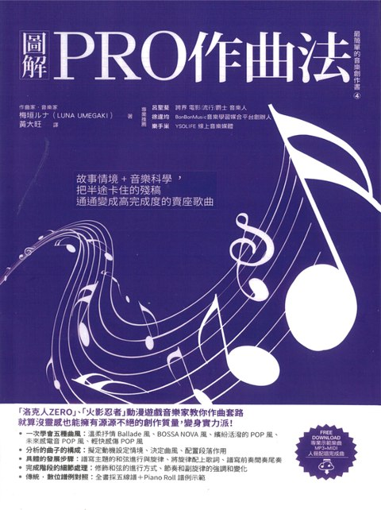

全部教材
设置
主题配色
纸白
米浆
雾蓝
淡紫
烟粉
薄荷
琥珀
石墨
午夜蓝

图解 PRO 作曲法
把脑海里的一句旋律写成整首歌。五个风格案例各用一首原创示范，从情境与曲式起步，逐段写旋律、配词、衔接，再比较和声草稿与修订。
从导论开始
→
本书程序谱
→
导论与五个作曲案例
导论
从构思到成曲
第一篇
抒情 Ballade
第二篇
甜美的 Bossa Nova
第三篇
色彩鲜明的 POP
第四篇
未来感电音 POP
第五篇
轻快而感伤的 POP
附录
音乐技巧索引